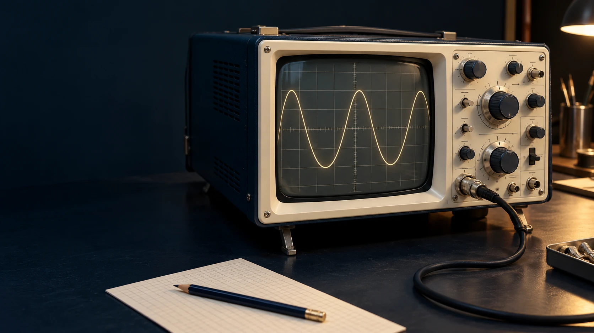
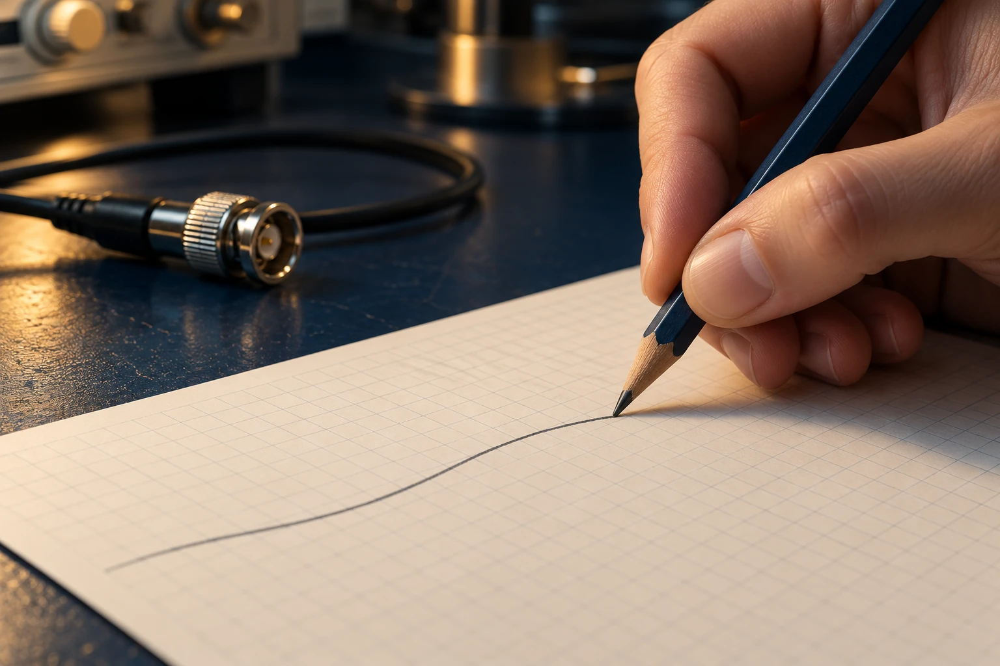
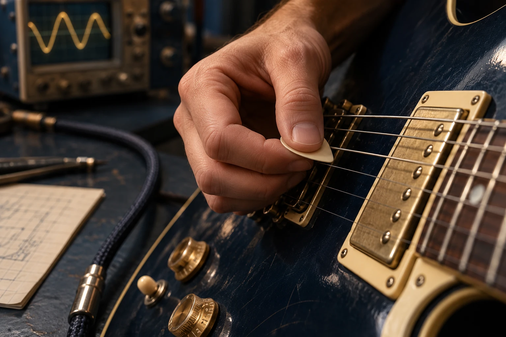
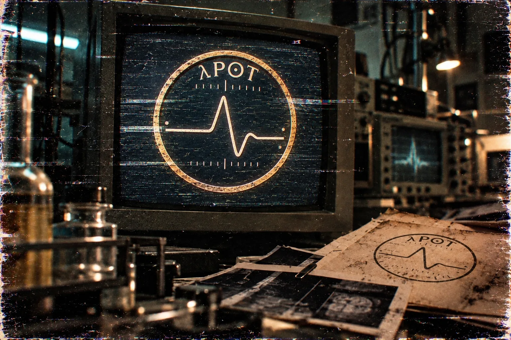

λP⊙T / STUDY 001
First, a line.
The quiet before the mark.
01 / THE CREATIVE LABORATORY
λP⊙T
Art. Sound. Human intention.
A place to make something that stays with you.
APOT X NEURALINK Prestock
An independent creative project around $APOT.

Quiet, before the impulse.
Your X account gives you one fixed signal.
Carry it as a PFP and a banner.
Your signal starts with X.
Connect. Preview. Carry it.
YOUR ACCOUNT / YOUR SIGNALThe same signature in both formats.
Checking your X session…
Your X avatar and your fixed signal form the PFP.
Reconnect with the same X account and the same signal returns.
Read-only sign-in. Your avatar is used for the PFP. Nothing is posted.
The same account signal, in another form.
An original, composed motif. Sound starts when you choose.
Share your signalGenerated artwork and sound. No neural data.
Your signal is derived from your verified X account ID. Changing your @handle or avatar does not change its seed, curve or network.
These are graphic parameters, with no biological data.
········Three studies from the laboratory.
Objects, hands and the act of creating.
λP⊙T / STUDY 001
The quiet before the mark.

λP⊙T / STUDY 002
Intention leaves a trace.

λP⊙T / STUDY 003
A small movement changes the room.
Art direction: λP⊙T · AI-generated photographic studies.

The mark on a monitor. A composed scene, not a recording.
People, tools and the science behind new ways to create.
Editorial references. Not a partnership. Arrow keys move between them.
Audrey makes images with a brain–computer interface. A clinical-trial account, not a general claim.
NeuralinkAlex designs in CAD with a brain–computer interface. The cube is a study, not his object.
Neuralink · PRIME StudySylvius 4 Online, from Oxford University Press. Playback stays on their page and is not embedded here.
Oxford University PressA reflection. A choice. A mark. A change.
The story begins with you.
λP⊙T / STUDY 004
Different surfaces.
The same person.
The surface changes.
Your signal stays.
One small decision.
Another way forward.
A thought becomes a gesture.
A gesture becomes a line.
A string moves.
Someone hears.
λP⊙T · Original AI-generated photographic artwork.
Who gets to create?
What could you make?
What could your next move change?
Questions for our creative programme. Dates are editorial horizons.
Draw a line. Record a sound. Build a small tool.
Show us what your signal becomes.
An image, a sound, a video or a working idea.
Add your name, tools and credits for anything you used.
Post on X and tag @APOTsignal. We may feature selected work with your permission.
Action Potential. Quote pair named by the creator. Not an announced partnership.
GsUXfGLgAvfMKxiCUVoe8iNaMR4dqP5xBbXcD8BbAP4oThe mint is the Solana address for $APOT. Supply, tax, and fee figures are the creator’s launch notes. They are not a promised return. “NEURALINK Prestock” names the quote token. It is not an announced partnership.